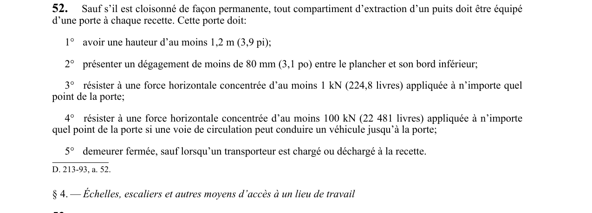

art-52-RSSM : porte du compartiment d'extraction à chaque recette
Chaque recette d'un compartiment d'extraction doit être barrée par une porte qui tient debout sous un choc, et cette porte reste fermée hors des manœuvres de chargement.
- Règle et seule dispense : une porte est exigée à chaque recette, sauf si le compartiment d'extraction est cloisonné de façon permanente.
- Dimensions : hauteur d'au moins 1,2 m (3,9 pi), et dégagement de moins de 80 mm (3,1 po) entre le plancher et le bord inférieur de la porte.
- Résistance de base : une force horizontale concentrée d'au moins 1 kN (224,8 livres) appliquée en n'importe quel point de la porte.
- Résistance renforcée : 100 kN (22 481 livres) si une voie de circulation peut conduire un véhicule jusqu'à la porte, soit 100 fois le seuil de base.
- Utilisation : la porte demeure fermée, sauf pendant le chargement ou le déchargement d'un transporteur à la recette.
🌐 LegisQuébec · 📄 PDF officiel
Texte officiel
Sauf s’il est cloisonné de façon permanente, tout compartiment d’extraction d’un puits doit être équipé d’une porte à chaque recette. Cette porte doit:
1° avoir une hauteur d’au moins 1,2 m (3,9 pi);
2° présenter un dégagement de moins de 80 mm (3,1 po) entre le plancher et son bord inférieur;
3° résister à une force horizontale concentrée d’au moins 1 kN (224,8 livres) appliquée à n’importe quel point de la porte;
4° résister à une force horizontale concentrée d’au moins 100 kN (22 481 livres) appliquée à n’importe quel point de la porte si une voie de circulation peut conduire un véhicule jusqu’à la porte;
5° demeurer fermée, sauf lorsqu’un transporteur est chargé ou déchargé à la recette.
Texte de l’article 52 RSSM, extrait de la couche texte du PDF officiel (page 26), sans OCR ni retouche. La capture ci-dessous et le PDF font foi.
{kind=link}

Toucher l'image pour l'agrandir🔗 Voir art. 52 RSSM dans le PDF (page 26)
Version : texte officiel du RSSM (RLRQ c. S-2.1, r. 14), à jour au 1er mai 2024 — Éditeur officiel du Québec
Voir aussi
- art. 50 : disposition abrogée · disposition-abrogée.
- art. 51 : protection des ouvertures profondes · obligation : dans une mine souterraine, toute ouverture d'une profondeur supérieure à 1,2 m doit être protégée par un garde-corps conforme ou fermée par un couvercle résistant à une charge ponctuelle d'au moins 2 kN ou à une charge répartie d'au moins 3,8 kN/m², le plus exigeant prévalant.
- art. 53 : compartiments puits profond circulation personnes · obligation : tout puits dépassant 30 m de profondeur doit être divisé en au moins deux compartiments, dont l'un sert exclusivement à la circulation des personnes par échelles, escaliers ou installation motorisée indépendante.
- art. 54 : installation motorisée transport personnes puits · obligation : lorsque le compartiment réservé aux personnes est desservi par une installation motorisée, celle-ci doit être indépendante de toute installation de hissage, conforme aux articles 215 à 349, réservée aux personnes, capable de transporter au moins 8 personnes simultanément.
- ⚖️ Loi habilitante : LSST
- ↑ Index du bloc : Aménagement du chantier
Pages qui pointent ici (5)
- art-51-RSSM : protection des ouvertures de plus de 1,2 m Recueil législatif
- art-53-RSSM : compartiment réservé à la circulation des personnes Recueil législatif
- art-54-RSSM : installation motorisée de transport de personnes Recueil législatif
- art-55-RSSM : compartiment desservi par une installation motorisée Recueil législatif
- RSSM : Aménagement du chantier (art. 12 à 99) Recueil législatif